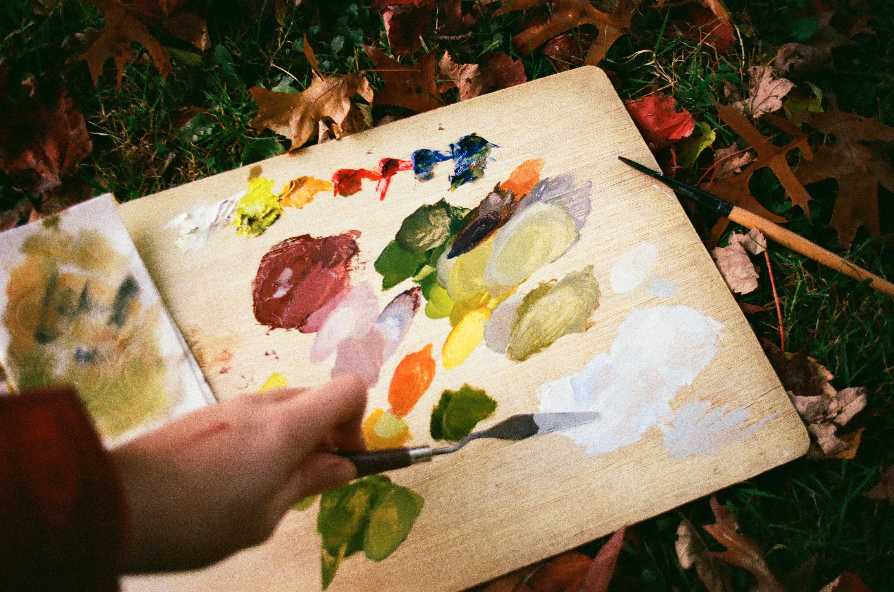
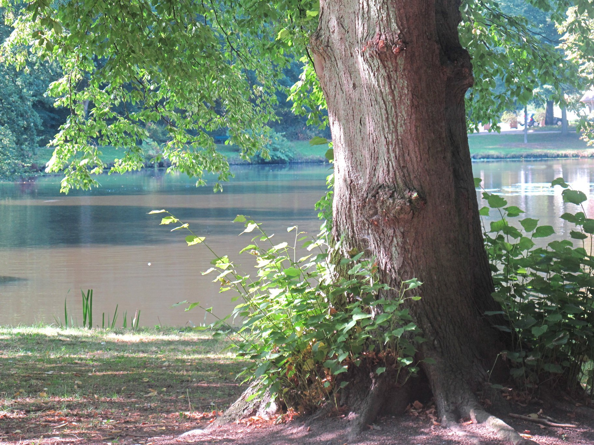
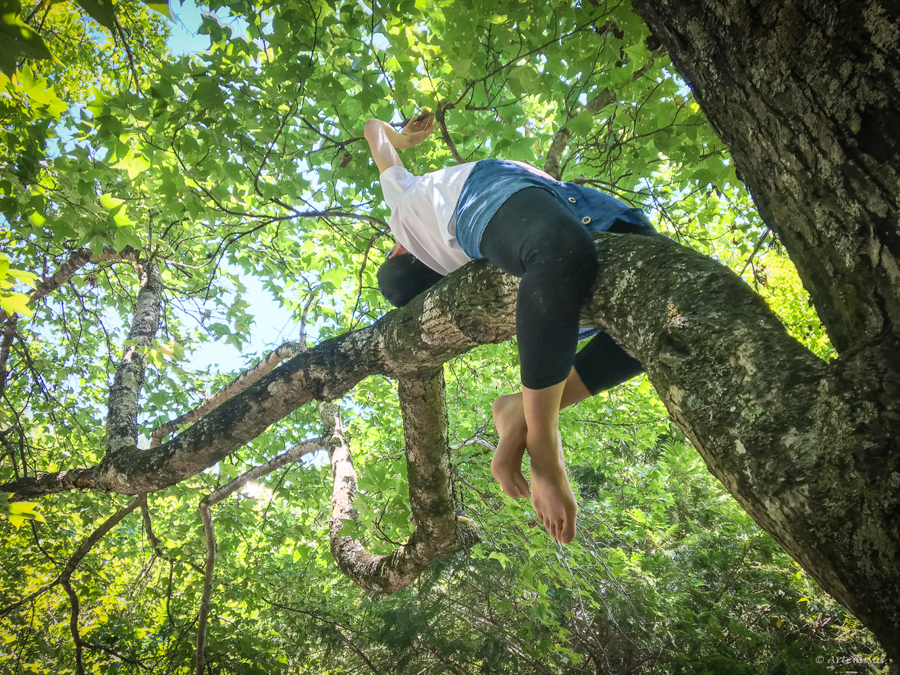
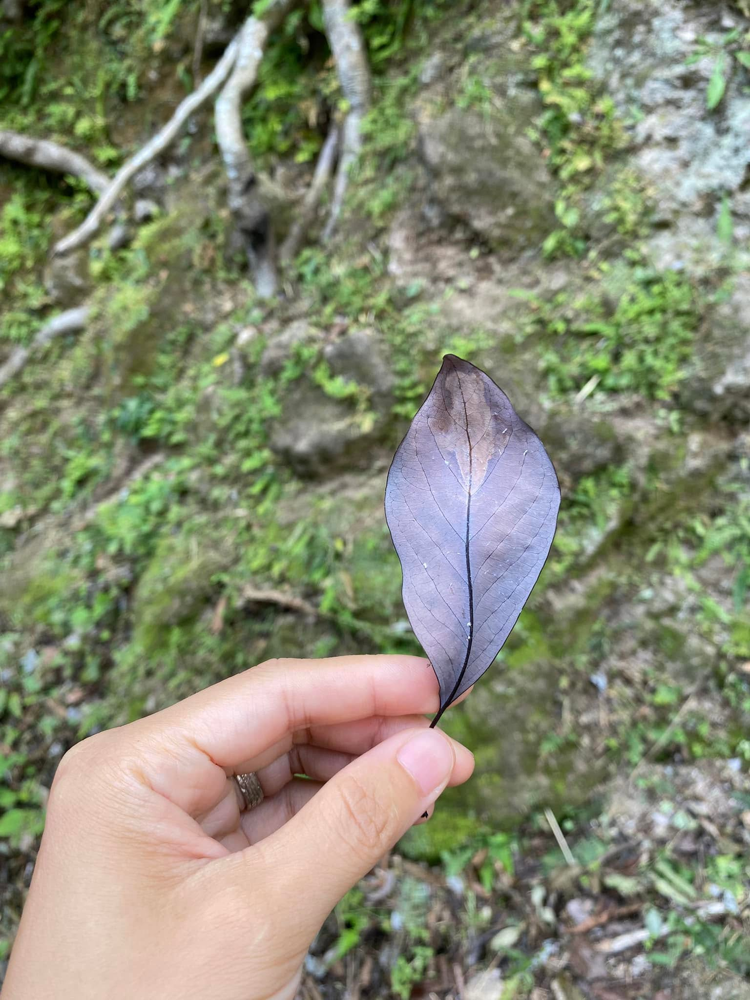
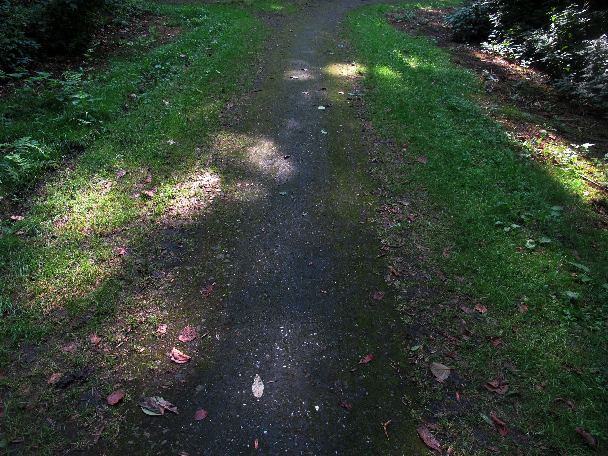
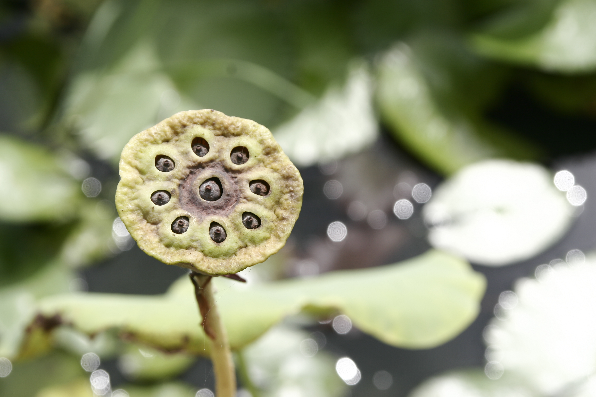
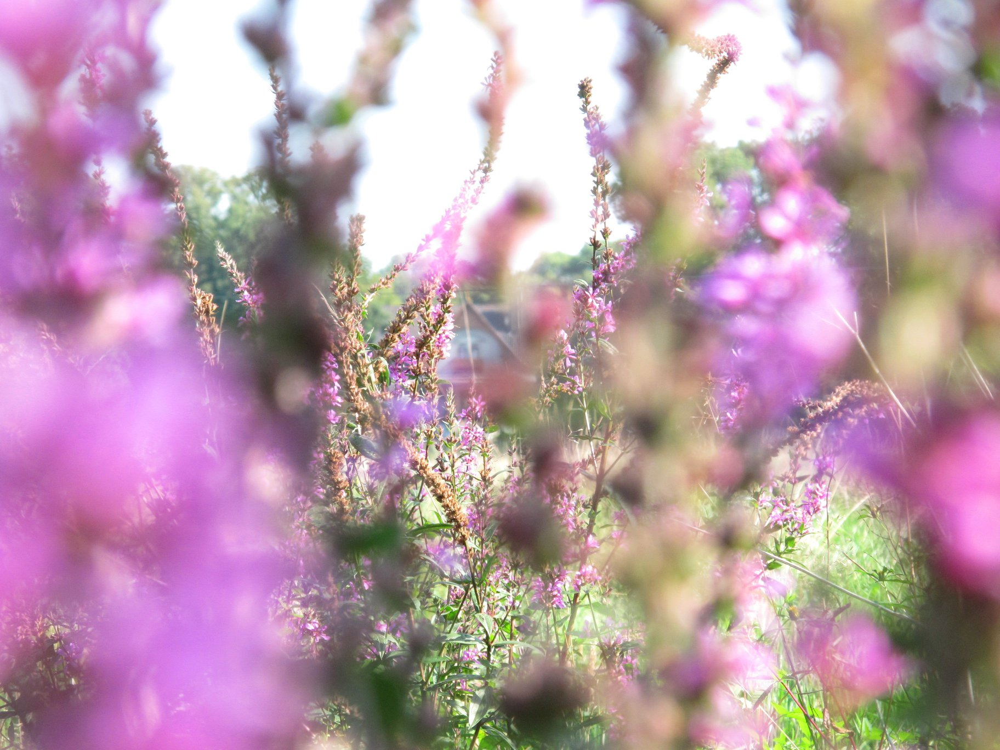
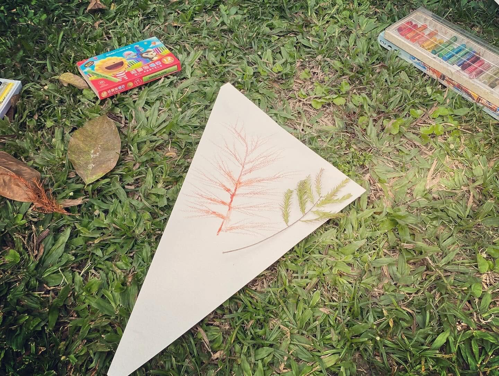
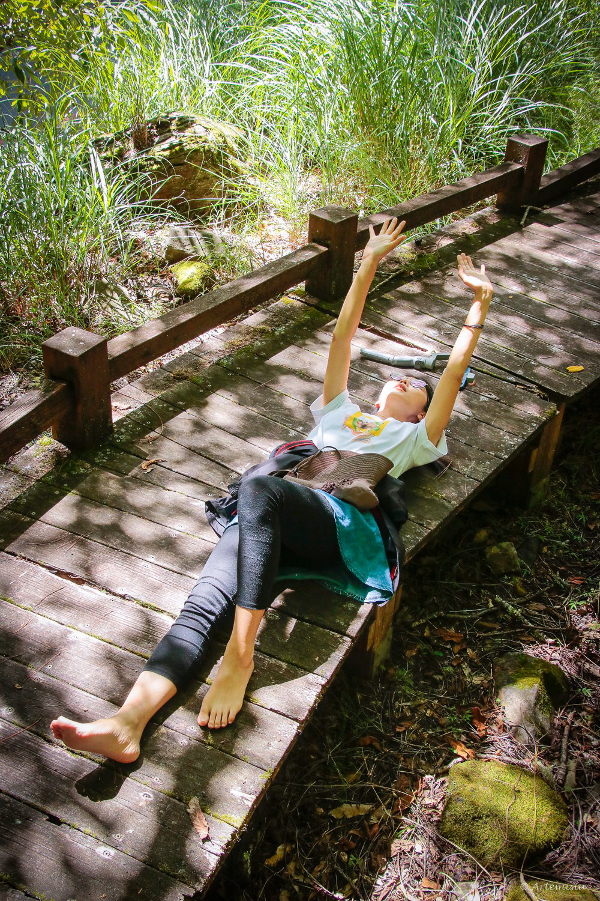

落葉
找一片已經落下來的東西，陪它坐一會兒。
什麼是開放畫室
一般的畫畫課，老師示範，大家照著畫，最後交出一幅作品。
開放畫室是一個開放的空間，人們自在前來、自在創作、自在分享。
「森林開放畫室」將帶著畫具小車前往森林，讓參與者自由選擇媒材。你會收到一封小小的自然邀請函，如何創作由你決定。
在森林裡，畫畫、捏陶、走走、發呆，都是創作的過程。
自然裡觀照世界，畫布上探索內心。

畫室預定開放日

搭捷運走路就到，活動前通知定點位置。

依次地點不同，活動前通知定點位置。
挑選畫具－安定自己－自在時光－茶席談畫－感謝森林
挑選畫具，領取當日的自然邀請函，設定提醒時間。
拿著畫具和邀請函，找一個今天想待著的地方。
創作時間約 1 小時。畫 5 分鐘就躺下來也可以，看著畫布上的光影發呆到最後也可以。
收拾畫具，喝一杯茶。
用心聆聽、自在分享。聊聊今天的你、今天的創作或今天的森林。
一起唱一首歌，謝謝今天的相遇，讓自然回家。
主題會跟著季節與當天的自然調整。光的角度、樹長出新葉與花朵，同樣的公園也有不同的變化。
找一片已經落下來的東西，陪它坐一會兒。
泥、土色、拓印，還有留下來的痕跡。
聞到什麼，就畫什麼。
讓水也成為作品的一部分。
今天的光，把什麼畫在地上？
不用畫得像，只是慢慢認識它。
讓風決定一部分的作品。
聽見什麼，就畫什麼。





為什麼做森林開放畫室
在空白的畫紙上，在我們的內心深處，有一片森林。
我們總以為畫畫要畫得像、畫得好，使畫畫變成一件令人恐懼的事情。
學會「用呼吸」畫畫以後，我開始去感受身體、感受顏色與畫筆、感受內心，然後讓顏色與線條浮出來。
呼吸－感受－畫，停－呼吸－感受－畫…
原來畫畫可以不用先想好要畫什麼，甚至可以不知道自己在畫什麼。更奇怪的是，畫著、感受著、畫著，你忽然會知道：「原來我是這樣」。
因為在看似空白的紙上，一直存在著一片森林。而那片森林，不僅來自環繞我們的自然，也來自我們的內心深處。
——拿起畫筆吧，

帶領者
森林療癒師，也是一直在畫畫的人。
森林開放畫室是小一個人主辦的創作與陪伴空間，不是心理治療或諮商。
適合誰
費用與報名
可以只來一次，也可以中途加入，不需要一次報名全季。
現場報名
500元
單次 2 小時
網路報名優惠
400元
單次 2 小時
活動推廣期優惠
350元
已停止
親子（一大一小，4–12 歲）
700元
原價 800 元
包含：畫具與茶水也歡迎帶自己最愛用的畫具每場滿 4 人開課
行前須知
可以。這裡沒有畫得好不好，只有你今天怎麼跟自然相遇。
不用。你可以畫、可以走走、看螞蟻、躺著，也可以整堂什麼都沒畫。
不是。這是創作與陪伴的空間。小一有森林療癒與藝術治療的訓練背景，會細心安排空間與節奏，但不做診斷，也不提供治療或諮商。
不用。分享是自願的，只說你想說的。只說「今天風很大」也可以。
一瓶水、帽子，以及可以直接坐在地上的衣服。畫具現場都有，想用自己的也歡迎帶來。
小雨原則照常，雨也許會成為畫室裡多出來的一位創作者。如果持續中雨、雷雨、強風，或有安全疑慮時，會改期（11/27、11/29）或取消。活動前一晚公告，前三小時做最後確認。
可以。請協助您的孩子珍惜使用畫具媒材，並自負孩子的安全責任。
歡迎將落葉落花落果成為你創作的一部分，但我們不採摘活的植物，也不影響生態環境。